Rojo a E+, negro a E-, y los cables de señal (verde y blanco) a A-/A+ o a B-/B+. El canal A permite ganancia 128 o 64; el canal B tiene ganancia fija de 32.
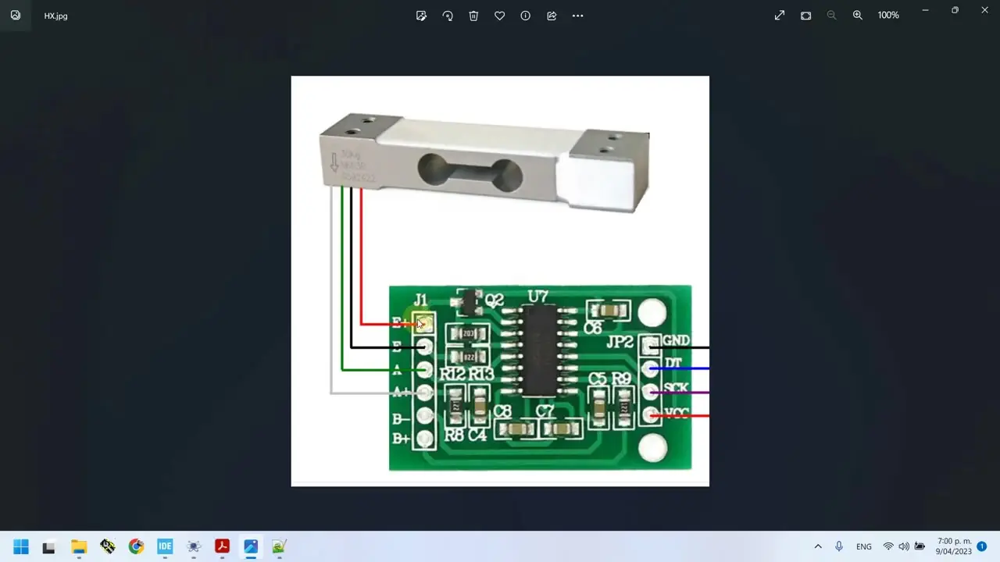
El HX711 amplifica la señal de la celda de carga y la convierte con un ADC de 24 bits. El micro da 24 pulsos de reloj para leer el dato y 1, 2 o 3 pulsos extra para elegir canal y ganancia (A con 128, B con 32, A con 64). La librería trae lectura, promedio y tara. En main se calcula el peso como (lectura - offset) × factor, donde el offset es el cero de la balanza y el factor sale de un peso conocido. Dos botones permiten tarar y calibrar.
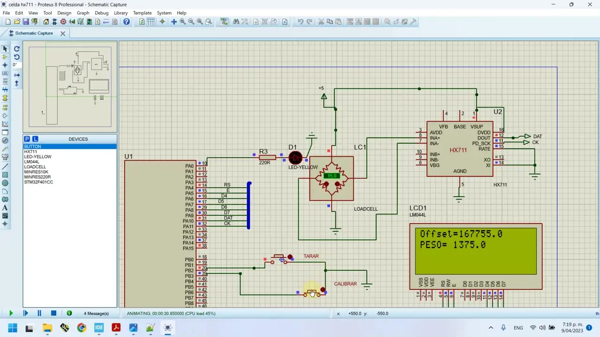
Rojo a E+, negro a E-, y los cables de señal (verde y blanco) a A-/A+ o a B-/B+. El canal A permite ganancia 128 o 64; el canal B tiene ganancia fija de 32.

Se dan 24 pulsos en PD_SCK para leer el dato por DOUT. Los pulsos extra eligen la ganancia de la próxima conversión:
El pulso en alto debe durar entre 0.2 y 50 µs. Si SCK queda en alto más de 60 µs el HX711 se apaga.
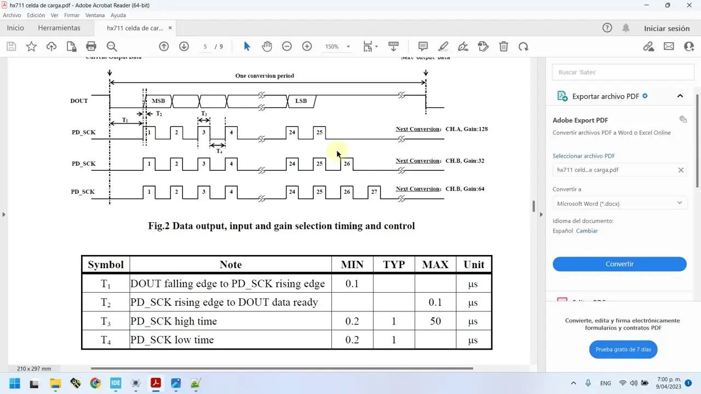
El HX711 trabaja a 5 V: en Proteus agrega un terminal POWER con +5 V. El micro trabaja a 3.3 V.
Se agregan dos pulsadores: TARAR (pone la balanza en cero) y CALIBRAR (con un peso conocido, aquí 1000 g).
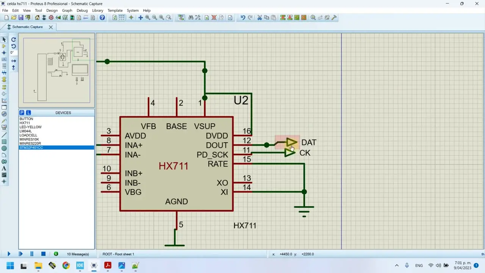
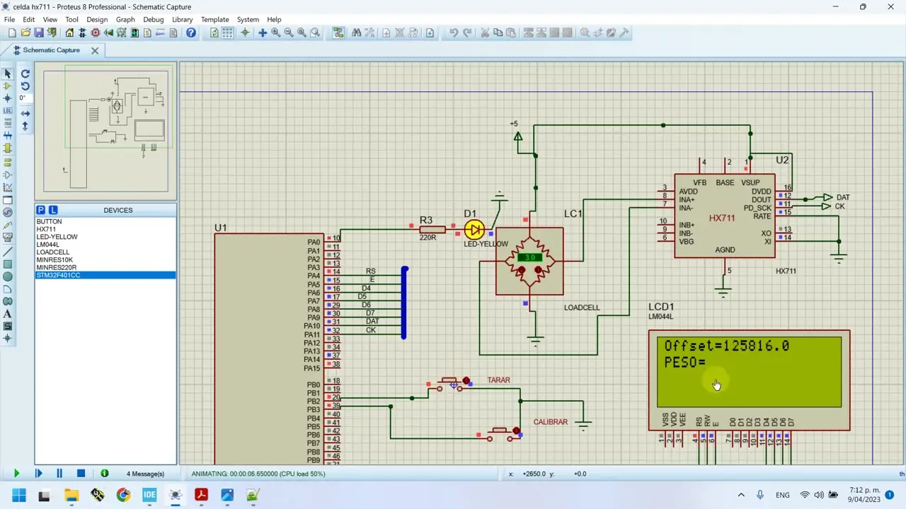
Usa estas etiquetas exactas (o defínelas en HX711.h):
HX711_CK: salida (PA10)HX711_DAT: entrada (PA11)sw_tarar (PB2) y sw_cal (PB3): entradas con pull-up internoled: salida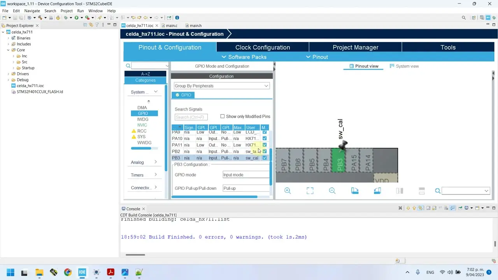
#include "HX711.h"
extern signed long offset; // guarda el offset
void HX711_init(void)
{
HAL_GPIO_WritePin(HX711_CK_GPIO_Port, HX711_CK_Pin, 0); // reloj en cero
HAL_Delay(500);
}
uint8_t HX_711_pulso(void)
{
uint8_t lei;
HAL_GPIO_WritePin(HX711_CK_GPIO_Port, HX711_CK_Pin, 1); // sube el reloj
Delay_us(2);
lei = HAL_GPIO_ReadPin(HX711_DAT_GPIO_Port, HX711_DAT_Pin);
HAL_GPIO_WritePin(HX711_CK_GPIO_Port, HX711_CK_Pin, 0); // baja el reloj
Delay_us(2);
return lei;
}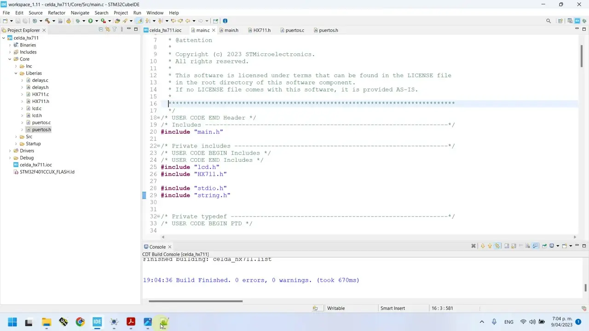
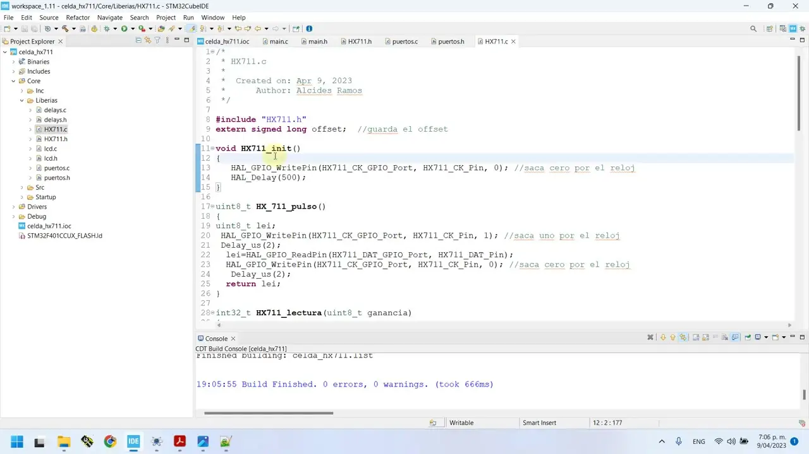
Primero espera (máximo 10 ms con waitforlow) a que el sensor esté listo, para no bloquear el programa si se desconecta. Luego da 24 pulsos armando el dato, y después los pulsos extra según la ganancia. Al final extiende el signo del dato de 24 bits.
int32_t HX711_lectura(uint8_t ganancia)
{
int16_t hx711_cont;
int32_t hx711_dato = 0;
// si el sensor está ocupado espera 10 ms y no bloquea el código
waitforlow(HX711_DAT_GPIO_Port, HX711_DAT_Pin, 10);
// los primeros 24 pulsos
for (hx711_cont = 23; hx711_cont >= 0; hx711_cont--)
{
if (HX_711_pulso() == 1)
hx711_dato = hx711_dato + (1L << hx711_cont);
}
Delay_us(100);
if (ganancia == 128) HX_711_pulso();
else if (ganancia == 32) { HX_711_pulso(); Delay_us(100); HX_711_pulso(); }
else if (ganancia == 64) { HX_711_pulso(); Delay_us(100); HX_711_pulso();
Delay_us(100); HX_711_pulso(); }
// verifica si es negativo
if ((hx711_dato & 0x800000) != 0)
{
hx711_dato = hx711_dato | 0xff000000; // lo convierte a 32 bits con signo
return (-hx711_dato); // quita el - si quieres el valor negativo
}
else return (hx711_dato);
}El dato llega en complemento a 2 de 24 bits. Esta versión devuelve el valor absoluto; si quitas el signo '-' del return obtienes la lectura negativa real.
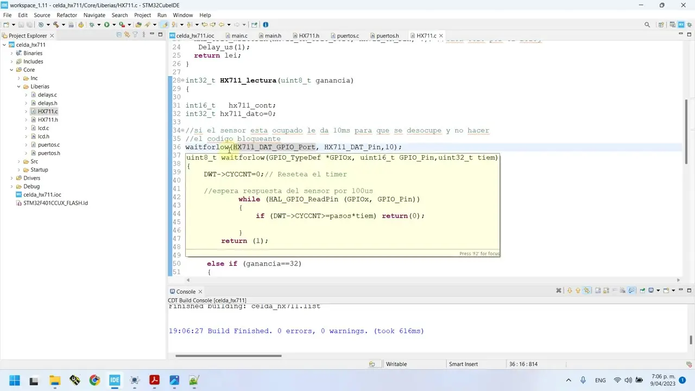
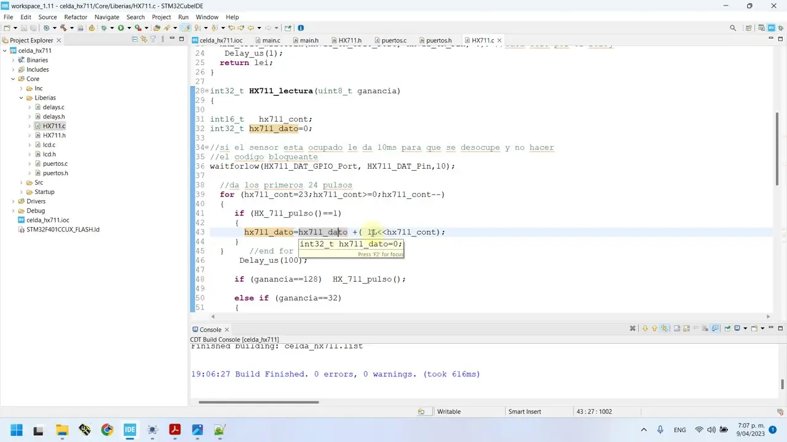
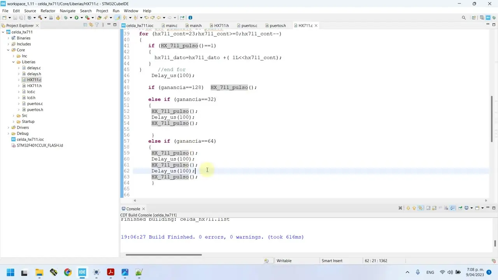
HX711_promedio lee varias veces con la ganancia pedida y saca el promedio (100 ms entre lecturas; puedes bajarlo si necesitas rapidez). HX_tarar guarda ese promedio como offset: el nuevo cero.
int32_t HX711_promedio(uint8_t veces, uint8_t ganancia)
{
int32_t prom = 0;
uint8_t cont;
for (cont = 0; cont < veces; cont++)
{
prom = prom + HX711_lectura(ganancia);
Delay_ms(100);
}
return (prom / cont);
}
void HX_tarar(uint8_t veces, uint8_t ganancia)
{
offset = HX711_promedio(veces, ganancia);
}En el video, al bajar el retardo del promedio a 20 ms la lectura falló en la simulación; volvió a 100 ms y funcionó.
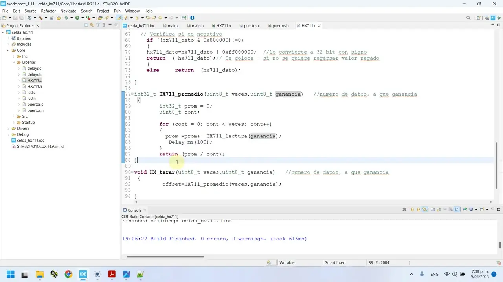
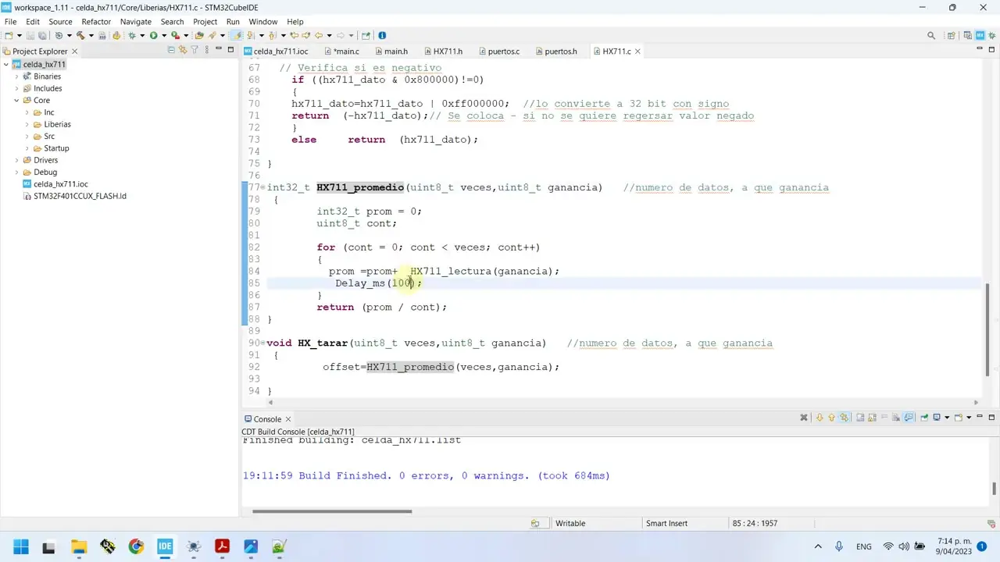
offset_manual es la lectura con la balanza vacía y calibra la lectura con el peso de prueba menos el offset. Así factor = gramos por cuenta.
const float offset_manual = 83877.0; // lectura en vacío
const float calibra = 419387 - offset_manual; // lectura con peso de prueba - offset
const float prueba = 1000.0; // peso de prueba en gramos
float factor = prueba / calibra; // factor multiplicativo
int32_t offset = offset_manual;
float peso, cal;
char texto[20];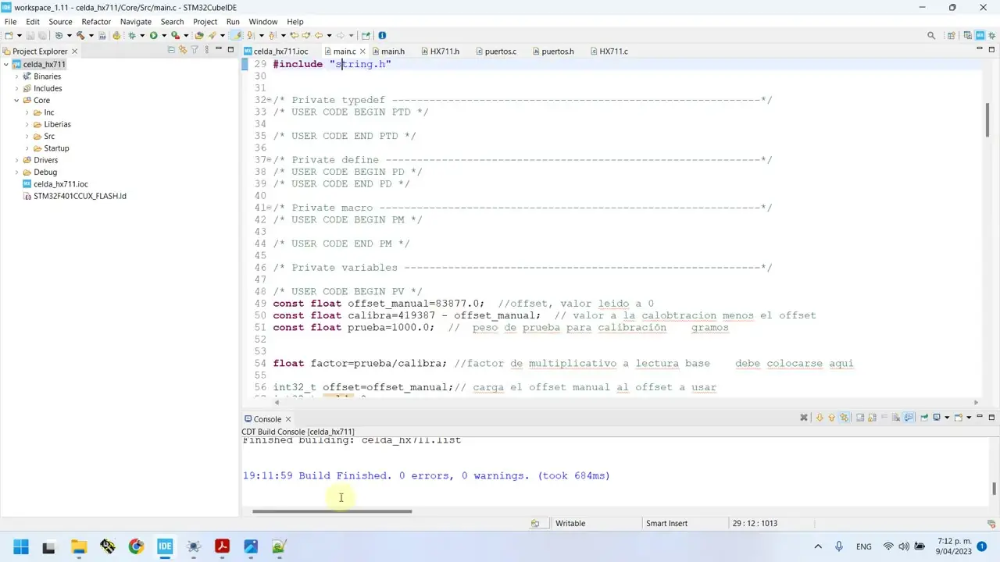
HX711_init();
Lcd_Init();
Lcd_Cmd(LCD_CLEAR);
Lcd_Cmd(LCD_CURSOR_OFF);
Lcd_Text(2, 1, "PESO=");
Lcd_Text(1, 1, "Offset=");
sprintf(texto, "%.1f", (float)offset);
Lcd_Text(1, 8, texto);Activa 'Use float with printf' en MCU Settings y genera el .hex para Proteus.
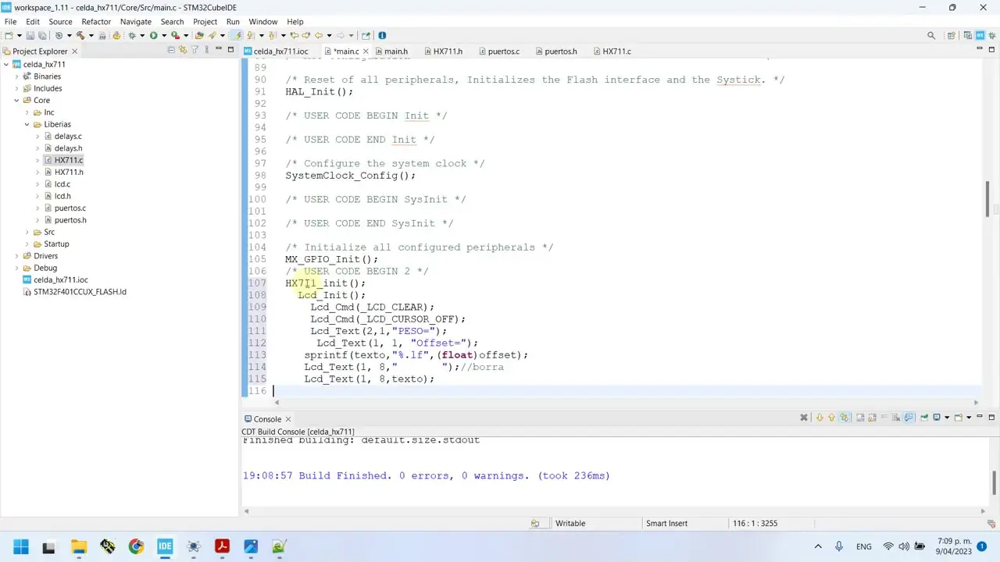
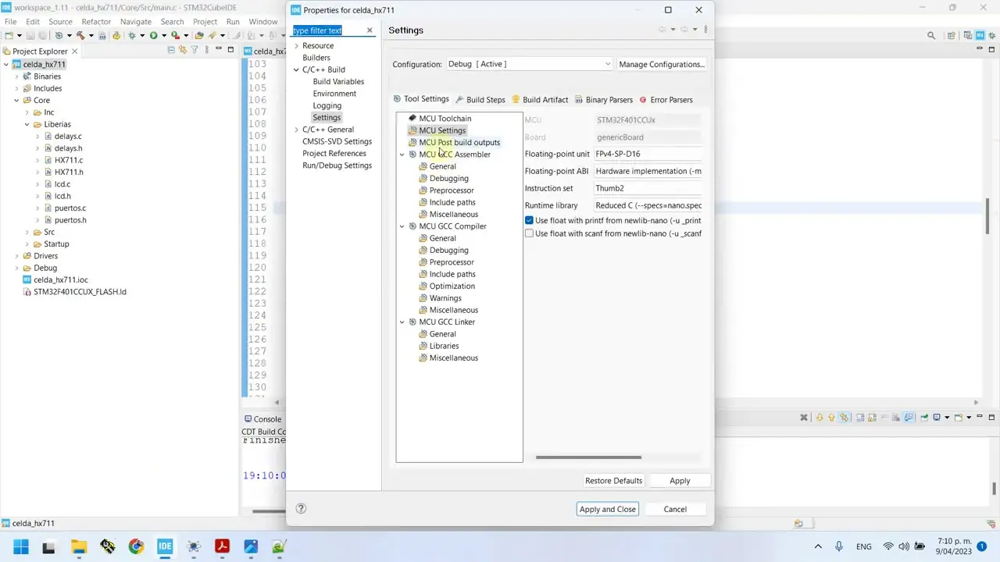
En cada vuelta se lee el promedio, se resta el offset y se multiplica por el factor. El LED titila; se apaga un momento mientras se tara o calibra.
Para calibrar se toman más muestras (50) porque se hace una sola vez.
while (1)
{
peso = HX711_promedio(10, 128) - offset;
peso = peso * factor;
if (peso <= 0) peso = 0; // sin valores negativos
sprintf(texto, "%.1f", peso);
Lcd_Text(2, 7, " ");
Lcd_Text(2, 7, texto);
HAL_GPIO_TogglePin(led_GPIO_Port, led_Pin);
HAL_Delay(100);
if (HAL_GPIO_ReadPin(sw_tarar_GPIO_Port, sw_tarar_Pin) == 0)
{
HAL_GPIO_WritePin(led_GPIO_Port, led_Pin, 0);
HX_tarar(10, 128); // 10 datos, ganancia 128
sprintf(texto, "%.1f", (float)offset);
Lcd_Text(1, 8, " ");
Lcd_Text(1, 8, texto);
}
if (HAL_GPIO_ReadPin(sw_cal_GPIO_Port, sw_cal_Pin) == 0)
{
HAL_GPIO_WritePin(led_GPIO_Port, led_Pin, 0);
cal = HX711_promedio(50, 128) - offset;
factor = prueba / cal;
}
}En el video los pulsadores aparecen como sw_tarar==0 y sw_cal==0; aquí se leen con HAL_GPIO_ReadPin. Los valores de calibración quedan en RAM: para no perderlos habría que guardarlos en EEPROM o en la flash del micro.
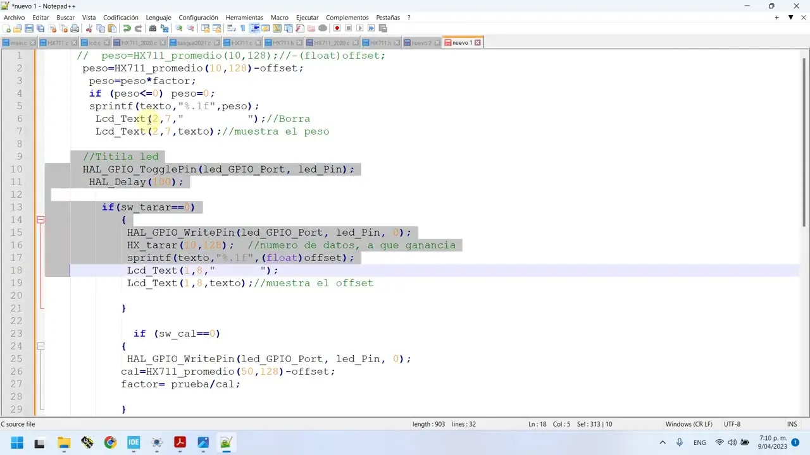
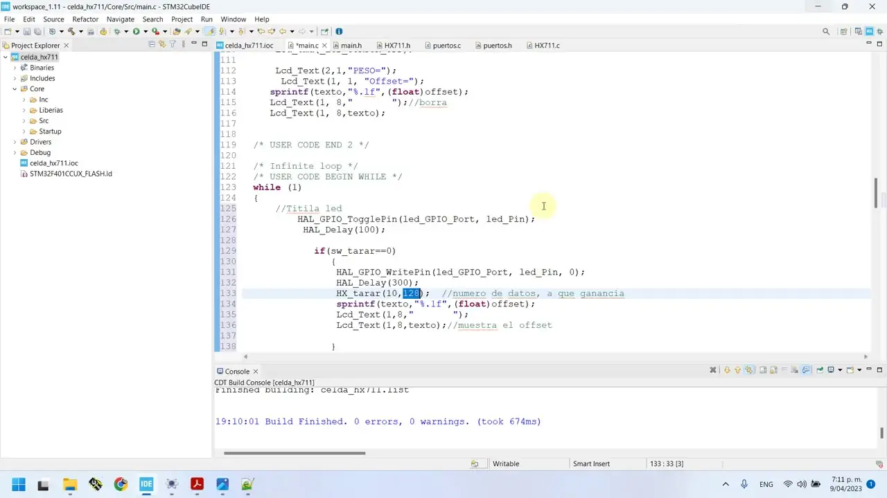
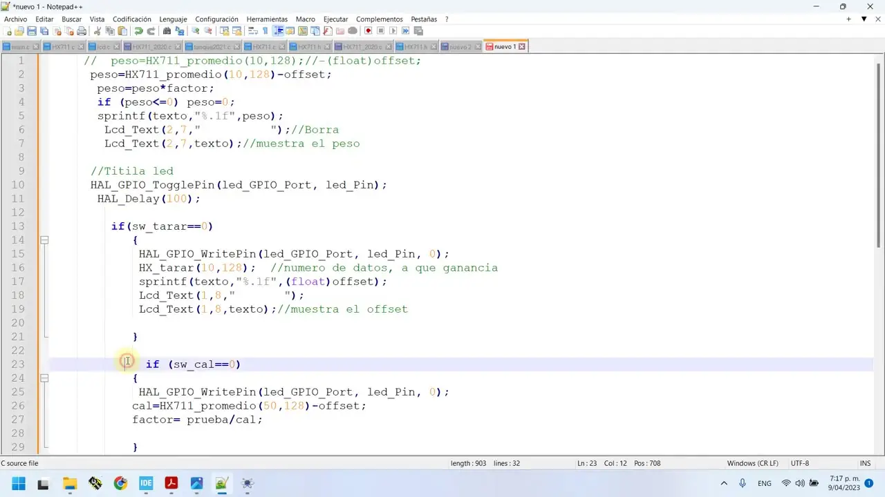
Pulsa TARAR con la balanza vacía para fijar el cero. Pon el peso conocido, pulsa CALIBRAR y espera a que el LED vuelva a titilar: la pantalla debe mostrar 1000 g.
El orden es: primero tarar, luego calibrar.
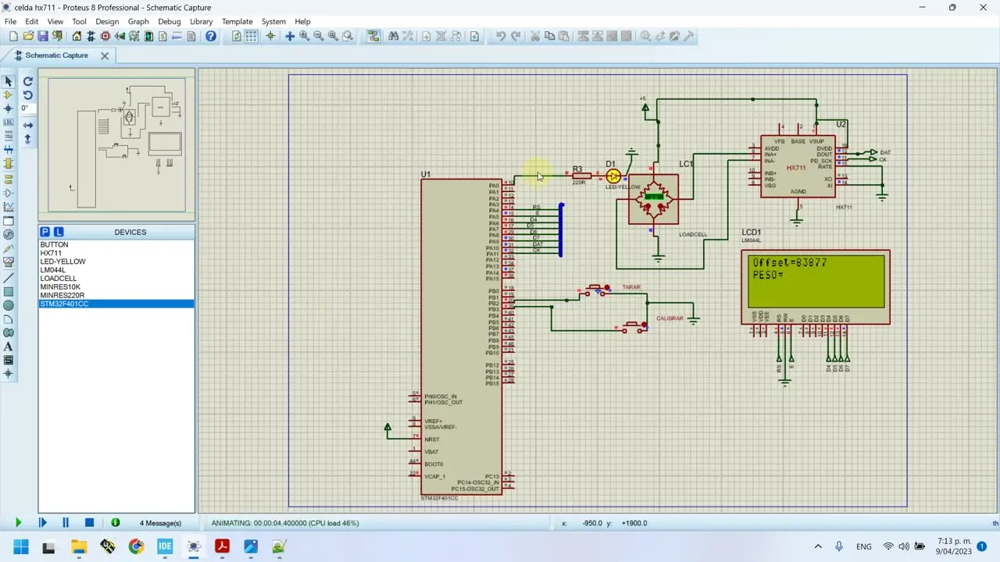
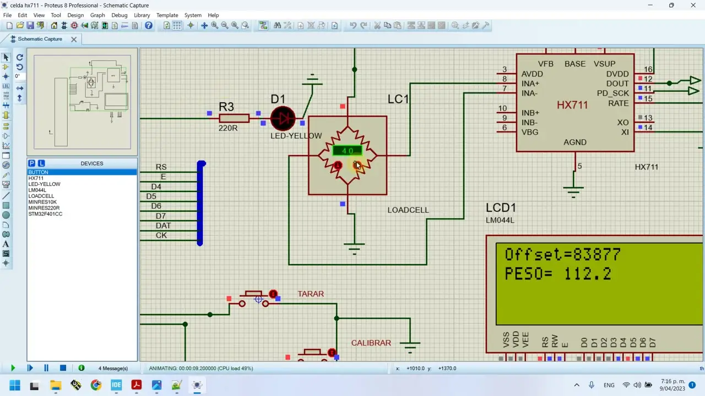